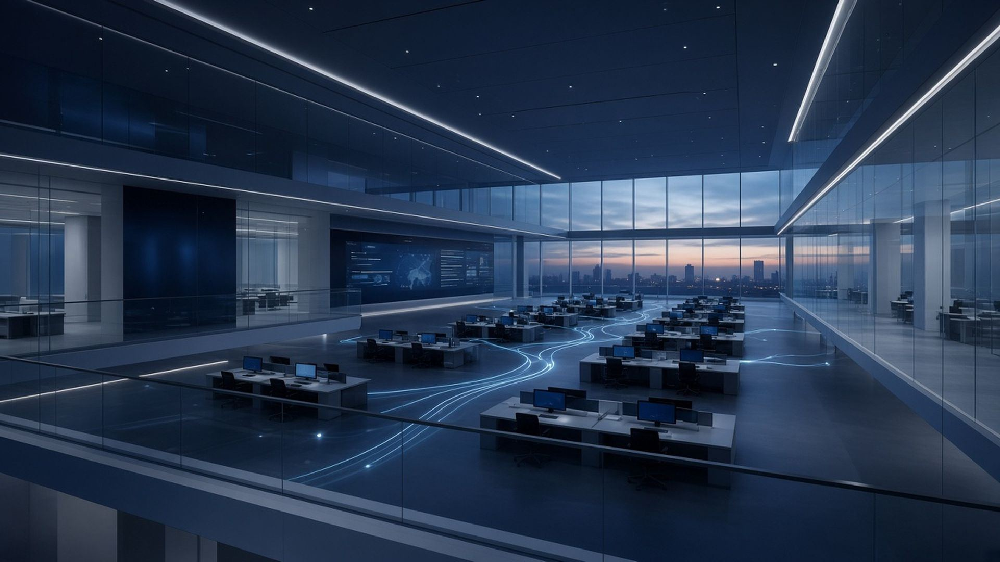
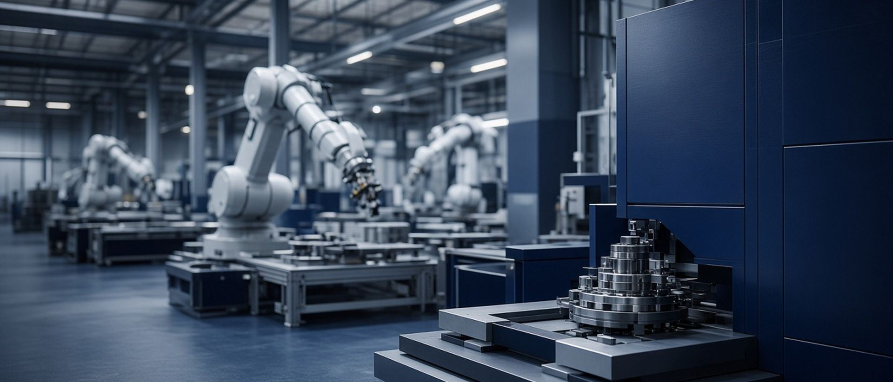

Kenton
Global Group
From requirement to working system.
An AI and digital transformation company. We modernize the systems you run on, put AI to work on real tasks, and embed engineers with your team to build it.
What we do
AI & Automation
Find the work AI can take on, build the agents to do it, and keep a person approving what matters.
- AI readiness
- AI agents
- Workflow automation
- Training and adoption

Digital Transformation
Modernize the systems your team runs on, connect your data and close the gaps between tools.
- Systems modernization
- ERP selection
- Data and analytics
- Cybersecurity

Forward Engineering
Engineers who embed with your team, build working prototypes fast and ship tools that stay in use.
- Embedded teams
- Rapid prototypes
- Integrations
- Handoff and support
Most firms hand you a plan. We stay until the system works, then hand it to your team.
Problem first
We start with the gap in your operation, not a tool we want to sell.
Built to run
We build, launch and train. A deliverable that sits in a folder is not a result.
People in charge
AI drafts, routes and checks. People approve every action with real consequences.
Secure by default
Access, data handling and logging are designed in from day one, not bolted on after launch.
How an engagement runs
The same four steps whether the job is an AI agent, a new system or a custom tool. Small first, then scale what works.
Assess
Interviews, a data and workflow review, and a written report on the gaps worth fixing.
Prototype
A working version of the highest-value fix, tested with the people who will use it.
Field
Launch, integrate with the systems you already run, and train the team.
Sustain
Measure, tune and hand over cleanly, or keep us on for ongoing support.
Two offices, one team
Headquartered in Covington, Kentucky, just across the river from Cincinnati, with a second office in Charleston, South Carolina. We're on-site when the work needs it and remote the rest of the time.

Covington, KY
Headquarters

Charleston, SC
Office
Clients and ventures
The businesses we're helping modernize and the products we're building ourselves. What we learn on one side goes straight into the other.
Client partner
Steidle Fabricating
A family-owned waterjet, welding and machining shop in Bromley, Kentucky, making custom parts and metal signs since 1955.
We're working with Steidle on digital transformation and growth: modernizing how work comes in and gets done, and building the digital presence to bring in new customers.
In development as an internal tool
A direct intelligence feed for government contractors
Contrackr pulls federal RFIs, solicitations and award data into one feed, then layers on competition and sourcing intelligence. Capture teams see what's coming, who is likely to bid and who supplies the work, before the response window closes.
- Opportunity feed
- RFIs, sources sought, solicitations and amendments from SAM.gov and agency forecasts, matched to your NAICS, PSC codes and keywords.
- Award intelligence
- Awards and obligations from FPDS and USASpending, tied to incumbents, contract vehicles and periods of performance.
- Competitive landscape
- Who wins similar work, at what value and how often, by agency, NAICS and set-aside.
- Sourcing signals
- The likely suppliers and products behind each requirement, kept separate from the reported facts.
Data from SAM.gov, FPDS, USASpending, agency procurement forecasts and GSA vehicles.

Have a problem worth solving?
Tell us where things are stuck. In one 30-minute call we'll point to the gaps worth fixing first.